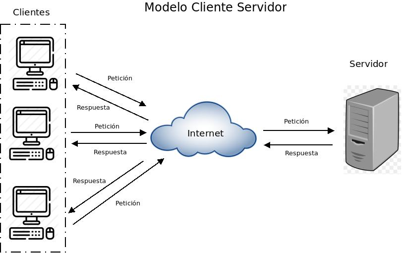

Introducció a la programació web
Objectius
- Seleccionar les arquitectures i tecnologies de programació web en entorn servidor, analitzant-ne les capacitats i característiques pròpies.
- Introduir els principals llenguatges i frameworks per al desenvolupament en l'entorn servidor.
- Caracteritzar i diferenciar els models d'execució de codi en el servidor i en el client web.
- Identificar les principals tecnologies associades.
- Instal·lar i configurar l'entorn de treball que emprarem per al desenvolupament web.
- Visualitzar mitjançant el navegador una pàgina web html amb codi PHP encastat.
Arquitectura d'una aplicació web
A diferència de les aplicacions d'escriptori, que utilitzen els recursos d'un únic ordinador les aplicacions web són distribuïdes, intervenen com a mínin dos equipos diferents: el client i el servidor.
La comunicació és du a terme mitjançant el protocol HTTP, base de la World Wide Web.
El model client/servidor
El model client-servidor és aquell on tots els clients estan connectats a un servidor on es centralitzen els diferents recursos. Aquests recursos estan a disposició dels clients cada cop que els sol·liciten. Això fa que totes les gestions que es realitzen es concentren en el servidor, que disposa dels requeriments dels clients amb prioritat, els arxius que són d'ús públic i els restringits, els arxius de només lectura, els que poden ser modificats, etc.

En el model client/servidor, el dispositiu que sol·licita informació es denomina client i el dispositiu que respon la sol·licitud es denomina servidor. Els processos de client i servidor es consideren una part de la capa d'aplicació. El client comença l'intercanvi sol·licitant les dades al servidor, que respon enviant un o més blocs de dades al client. Els protocols de capa d'aplicació descriuen el format de les sol·licituds i respostes entre clients i servidor. A més de la transferència real de dades, aquest intercanvi pot requerir informació addicional, com l'autentificació de l'usuari o la identificació d'un arxiu de dades per transferir.
Encara que les dades generalment es descriuen com un flux del servidor al client, algunes dades sempre flueixen del client al servidor. El flux de dades pot ser el mateix en les dues direccions o fins i tot ser major en la direcció que va del client al servidor. Per exemple, un client pot transferir un arxiu al servidor amb finalitats d'emmagatzemament. La transferència de dades d'un client a un servidor es coneix com a pujada i la de les dades d'un servidor a un client, baixada.
El protocol HTTP
El protocol de transferència d'hipertext (HTTP) és un protocol client-servidor molt senzill que articula els intercanvis d'informació entre els clients HTTP (navegadors) i els servidors HTTP.
HTTP es basa en operacions senzilles de sol·licitud/resposta. Quan un client estableix una connexió amb un servidor i envia un missatge amb les dades de la sol·licitud, el servidor respon amb un missatge similar que conté l'estat de l'operació i el seu resultat de la sol·licitud. Totes les operacions poden adjuntar un objecte o recurs sobre el qual actuen; cada objecte web (document HTML, arxiu multimèdia o aplicació CGI) és conegut pel seu localitzador uniforme de recursos (URL, Uniform Resource Locator). Els recursos poden ser arxius, el resultat de l'execució d'un programa, una consulta a una base de dades, la traducció automàtica d'un document, etc.
HTTP és un protocol sense estat, és a dir, no guarda cap informació sobre connexions anteriors. El desenvolupament d'aplicacions web freqüentment necessita mantenir estat. Per això s'utilitzen les galetes (cookies), és a dir, la informació que un servidor pot emmagatzemar en el sistema client. Això permet que les aplicacions web institueixin la noció de "sessió", i, alhora, permet rastrejar usuaris, ja que les galetes es poden emmagatzemar en el client durant un temps indeterminat.
Per a conèixer amb més profunditat el protocol HTTP avaluarem en què consisteix una transacció HTTP. Cada vegada que un client fa una petició a un servidor, s'executen un seguit d'accions:
- Un usuari accedeix a una adreça d'Internet (URL) seleccionant un enllaç d'un document HTML o introduint-la directament a la barra de navegació d'un navegador web des de la perspectiva del client web. El client web descodifica l'adreça d'Internet (URL) separant-ne les diferents parts. És així com s'identifiquen el protocol d'accés, el node, expressat amb el nom de domini o la seua adreça IP, el possible port opcional (el valor per defecte és el 80) i l'objecte del servidor requerit.
- S'obre una connexió TCP/IP amb el servidor cridant el port TCP corresponent. Es fa la petició. En conseqüència, s'envien l'ordre necessària (GET, POST, HEAD, etc.), l'adreça de l'objecte requerit (el contingut de l'adreça d'Internet del servidor), la versió del protocol HTTP utilitzada (en la major part de les ocasions és HTTP/1.1) i un conjunt variable d'informació que inclou dades sobre les capacitats del navegador web, dades opcionals per al servidor, etc.
- El servidor localitza el recurs sol·licitat i torna la resposta al client.
- Aquesta resposta consisteix en un codi d'estat i el tipus de dada amb extensions multipropòsit de correu d'Internet (MIME, Multipurpose Internet Mail Extension) de la informació de tornada, seguit de la mateixa informació.
- El client formata i mostra el recurs rebut.
- Es tanca la connexió TCP.
Important
Aquest procés es repeteix en cada accés que es faça al servidor HTTP. Per exemple, si es recull un document HTML que conté quatre imatges, el procés de transició mostrat amb anterioritat es repeteix cinc vegades, és a dir, una pel document HTML i quatre per les imatges.

Si el recurs sol·licitat és un programa (CGI, ASP.NET, PHP, etc.) el servidor HTTP redirigirà la petició a la llibreria o intèrpret adequat que executarà el programa i tornarà el control al servidor web.

Format de les URL
La sintaxi general de les URL consisteix en una seqüència jeràrquica de 5 components:
URI = scheme:[//authority]path[?query][#fragment]
on el component authoriry es deivideix en tres subcomponents:
authority = [userinfo@]host[:port]

Servidors web i servidors d'aplicacions
Així com les aplicacions d'escriptori s'executen directament sobre el sistema operatiu, les aplicacions web necessiten d'una eina addicional que permeti desplegar-les per a la seva posada en marxa. Parlem de servidors web i servidors d'aplicacions, respectivament.
Un servidor web és una aplicació que rep una petició HTTP (normalment a través d'un navegador web) i retorna la pàgina web sol·licitada (escrita en llenguatge HTML i podent contenir codi Javascript encastat) perquè aquesta sigua interpretada i visualitzada pel navegador de qui va realitzar la sol·licitud (l'usuari).
Un servidor d'aplicacions és un servidor que permet l'execució d'aplicacions web.
Exemples
Apache
Apache és un dels servidors web més coneguts. És programari lliure i multiplataforma, encara que aproximadament el 90% dels servidors Apache s'executen actualment en entorns Linux ja que és el servidor preferit per a aquesta plataforma.
És molt modular el que permet incorporar característiques un cop instal·lat i posat en marxa. Això li fa també molt flexible i pot donar servei a webs escrites en els llenguatges de programació web més estesos (com PHP, Python, ASP,...) A través del mòdul corresponent.
nginx
nginx (pronunciat en anglès "engine X") és un servidor web/proxy invers lleuger d'alt rendiment i un proxy per protocols de correu electrònic ( IMAP / POP3).
PHP-FPM
FastCGI Process Manager és un servei que permet executar codi PHP separat del servidor HTTP de forma que millora la seua flexibilitat i el seu rendiment.
Pàgines web estàtiques i dinàmiques
Pàgines web estàtiques
Les pàgines web estàtiques són aquelles en que el seu contingut no varia, per la qual cosa mostraran sempre la mateixa informació cada vegada que es carreguen. Són les pàgines creades en el llenguatge HTML, CSS i javascript.
Les pàgines estàtiques només canvien si el programador web les modifica.
Pàgines web dinàmiques
Les pàgines web dinàmiques són pàgines el contingut de les quals varia a partir de certa informació: base de dades, identificació de l'usuari, hora del dia, etc.
Aquest tipus de pàgines s'han de realitzar mitjançat un llenguatge de programació.
Execució de codi en el client i en el servidor
Pel que hem pogut veure fins ara en el desenvolupament d'una aplicació web podem distingir entre una sèrie de tecnologies que s'executen en el navegador (client-side o front-end programming) i un sèrie de tecnologies que s'executen en el servidor (server-side o back-end programming)
En el següent gràfic es mostra un escenari on podem trobar codi que s'executa en el servidor (PHP) i en el client (javascript).

Model de desenvolupament en 3 capes
Des d'un punt de vista de desenvolupament una aproximació més detallada al model client-servidor és el que es coneix com a model en 3 capes. És un model on es mostra més en detall com es distribueix el programari que participa en qualsevol desenvolupament web. Segueix estant present l'arquitectura client-servidor (tot es basa en ella) però apareixen més detalls com el programari utilitzat en cada un dels dos actors i com interactuen les diferents tecnologies o aplicacions.
Per comprendre millor que és el model de desenvolupament de 3 capes podem observar el següent esquema on es mostra cadascuna d'aquestes capes físíques :

Des d'un punt de vista lògic les capes (layers) es divideixen les següents funcionalitats:
- Capa de presentació: És la capa on l'aplicació es mostra a l'usuari. Bàsicament és la GUI (Graphical User Interface, interfície gràfica d'usuari). En el cas d'una aplicació web seria el codi HTML que es carrega directament al navegador web. En qualsevol cas, s'executa directament en l'equip del client.
-
Capa d'aplicació: És la capa intermèdia on es porta a terme tota la lògica de l'aplicació. Sempre s'executarà en el costat servidor. Aquesta capa, després de realitzar tots els càlculs i/o operacions sobre les dades, genera el codi HTML que serà presentat a l'usuari en la capa següent.
Sols estar desenvolupada usant PHP, Pyhton, Java, etc i es comunica amb la capa de dades mitjançant una API.
-
Capa de dades: És la capa que emmagatzema les dades. Bàsicament, en condicions normals, fa referència al propi SGBD que és l'encarregat d'emmagatzemar les dades. Depenent de l'arquitectura de l'aplicació, aquesta capa i la de negoci es poden trobar físicament en el mateix equip, encara que també és possible que s'hagin de separar per qüestions de rendiment. La capa de dades serveix totes la informació necessària a la capa de negoci per dur a terme les seves operacions.
Si ens imaginem una botiga online, la capa de dades emmagatzemaria tota la informació en una base de dades (usuaris, comandes, articles, ofertes,...). La capa d'aplicació hauria d'accedir a aquesta informació i, després processar una comanda, per exemple i finalment presentar el resultat a l'usuari en el navegador, que és la capa de presentació.
I si ens centrem en un cas concret amb programari i tecnologies ja definits, un model de 3 capes podria ser el següent:
")
- Navegador web: En aquest cas, Mozilla Firefox, Internet Explorer o Google Chrome podrien ser qualsevol de les aplicacions que ocuparien aquesta capa
- Apache + PHP / IIS + ASP: Un servidor web acompanyat del seu corresponent llenguatge de programació web permeten desenvolupar la part que ocupa la capa de negoci. També podríem col·locar la combinació Apache Tomcat + Servlets
- MySQL / PostgreSQL / Node: Finalment a la capa de dades podem posar qualsevol SGBD, com poden ser MySQL o PostgreSQL.
L'avantatge principal d'aquest model és que el desenvolupament es pot dur a terme en diversos nivells i, en cas que sobrevinga algun canvi, només afectarà el nivell requerit sense haver de revisar entre el codi font d'altres mòduls, atès que s'haurà reduït el acoblament informàtic fins a una interfície de pas de missatges.
Front-end, back-end, Full stack
També tenint en compte en quin costat se situen les tecnologies i per a què s'utilitzen aquestes, actualment es parla molt de 3 perfils diferenciats en l'àmbit del desenvolupament web:
- Front-end: És la part del desenvolupament que s'encarrega del disseny i maquetació de l'aplicació web utilitzant tecnologies com HTML, CSS i Javascript (i els seus frameworks). En aquest cas s'ha de preocupar també de la correcta presentació en qualsevol tipus de dispositiu i fins i tot del posicionament en cercadors
- Back-end: És la part del desenvolupament que s'encarrega del costat servidor utilitzant tecnologies com PHP, JSP i Python. També s'encarrega de l'administració del servidor d'aplicacions i la base de dades.
- Full stack: En un perfil que engloba els dos anteriors. En aquest cas el desenvolupador potser no és un expert de cap tecnologia concreta però té amplis coneixements de tot el conjunt i és capaç de col·laborar en qualsevol de les parts.

Tipogia de les aplicacions web
Depenent de la forma en què s'utilitzen les tecnologies podem classificar les aplicacions en:
- Tradicionals o clàssiques, on pràctimanent tota la lògica i la presentenció es genera en el costat de servidor.
- Híbidres on una aplicació tradicional incorpora tecnologies en el costat del client per a millorar l'experiència de l'usuari.
- Single Page Applications (SPA). En el costat servidor es generen una sèrie de funcionalitats accessibles mitjançant una API i tota la càrrega de la presentació és realitza en el costat del client que s'encarrega a més realizar les sol·licitus a la API.

Llenguatges
PHP
PHP (PHP Hypertext Preprocessor) és un llenguatge de programació de costat servidor dissenyat principalment per al desenvolupament web.
PHP s'utilitza com a llenguatge de script embegut en pàgines HTML i funciona, normalment, com un mòdul del servidor web (per exemple, a Apache). El servidor web combina els resultats d'executar els scripts PHP amb l'HTML al qual va encastat i genera la pàgina web resultant per al navegador.
Actualment PHP funciona pràcticament amb qualsevol servidor web i en qualsevol Sistema Operatiu existents, i gairebé amb qualsevol SGBD en cas que necessitem utilitzar una base de dades. Tot i això, el més habitual és veure-ho formant el que es coneix com una arquitectura LAMP (Linux, Apache, MySQL i PHP), és a dir, funcionant sobre un sistema operatiu Linux, executant-com un mòdul del servidor web Apache i utilitzant a MySQL com SGBD per emmagatzemar la informació en cas que es requereixi una base de dades.

El llenguatge PHP va ser dissenyat per Rasmus Lerdorf i ara es manté per una comunitat de desenvolupadors, a més és de codi obert.
A continuació, un fragment d'una pàgina web dinàmica escrita amb PHP on es pot apreciar com s'incrusta el codi juntament amb l'HTML de la pàgina:
JSP / Servlets
JavaServer Pages (també conegut com JSP) és una tecnologia creada per a la creació de pàgines web dinàmiques del costat servidor. Igual que PHP, el seu codi s'escriu encastat juntament amb l'HTML de la pàgina web i és el servidor d'aplicacions, en aquest cas, qui ha de processar-per generar la pàgina web resultant, en HTML.
D'altra banda, Java Servlets és una tecnologia que també es pot utilitzar per crear contingut web dinàmic però que a més estén la seva funcionalitat a la possibilitat de connectar aquestes webs dinàmiques amb un altre contingut accessible a través d'Internet. De vegades s'utilitza juntament amb JSP per crear aplicacions web més complexes.
Totes dues són tecnologies desenvolupades per Sun Microsystems i propietat ara d'Oracle, després d'adquirir aquesta última a la primera fa ja alguns anys.

Python
El llenguatge Python va ser dissenyat per Guido van Rossum i ara es manté gràcies a una comunitat de desenvolupadors, i és codi obert.

Exemple de codi escrit amb Python. En aquest cas utilitzant el framework Django per al desenvolupament d'aplicacions web:
<h1>Mis películas</h1> <a href="#">+</a>
{% if lista_peliculas %}
<ul>
{% for pelicula in lista_peliculas %}
<li><a href="{% url 'pelicula' pelicula.id %}">{{ pelicula.titulo }}</a></li>
{% endfor %}
</ul>
{% else %}
<p>No hay películas disponibles</p>
{% endif %}
Separada del controlador:
from django.shortcuts import render
. . .
def index(request):
lista_peliculas = Pelicula.objects.all()
context = {'lista_peliculas': lista_peliculas}
return render(request, 'mispeliculas/index.html', context)
ASP.NET
ASP.NET és una tecnologia, creada per Microsoft, per al desenvolupament de lloc web dinàmics, aplicacions i serveis web. És la tecnologia successora del que abans es coneixia com ASP, l'antiga tecnologia de Microsoft per a la creació de pàgines web dinàmiques.
Com que funciona sobre la plataforma .NET de Microsoft, permet que es pugui desenvolupar en qualsevol dels llenguatges de programació d'aquesta plataforma, Visual Basic .NET o C#.
El més habitual és veure-ho funcionar juntament amb el lloc web de Microsoft, IIS (Internet Information Server).

A continuació, un exemple de pàgina web dinàmica amb ASP.NET (desenvolupada en llenguatge C #) programant l'acció que passa en prémer un botó (apareix el text d'un formulari a la part final del web):
protected void Button1_Click(object sender, EventArgs e)
{
string buf = TextBox1.Text;
changed_text.InnerHtml = buf.ToUpper();
}
<%@ Page Language="C#" AutoEventWireup="true" CodeBehind="Default.aspx.cs"
Inherits="firstexample._Default" %>
<!DOCTYPE html PUBLIC "-//W3C//DTD XHTML 1.0 Transitional//EN"
"http://www.w3.org/TR/xhtml1/DTD/xhtml1-transitional.dtd">
<html xmlns="http://www.w3.org/1999/xhtml" >
<head runat="server">
<title>
Untitled Page
</title>
</head>
<body>
<form id="form1" runat="server">
<div>
<asp:TextBox ID="TextBox1" runat="server" style="width:224px">
</asp:TextBox>
<asp:Button ID="Button1" runat="server" Text="Enter..."
style="width:85px" onclick="Button1_Click" />
<hr />
<h3> Results: </h3>
<span runat="server" id="changed_text" />
</div>
</form>
</body>
</html>
Bibliografia
- Education, I., 2020. What is Three-Tier Architecture. [online] Ibm.com. Available at: https://www.ibm.com/cloud/learn/three-tier-architecture [Accessed 9 September 2022].
- MDN contributors, 2022. Introduction to the server side - Learn web development | MDN. [online] Developer.mozilla.org. Available at: https://developer.mozilla.org/en-US/docs/Learn/Server-side/First_steps/Introduction [Accessed 9 September 2022].